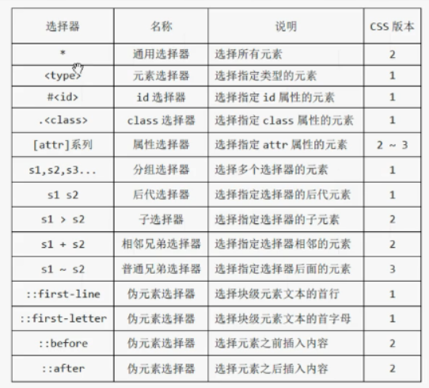
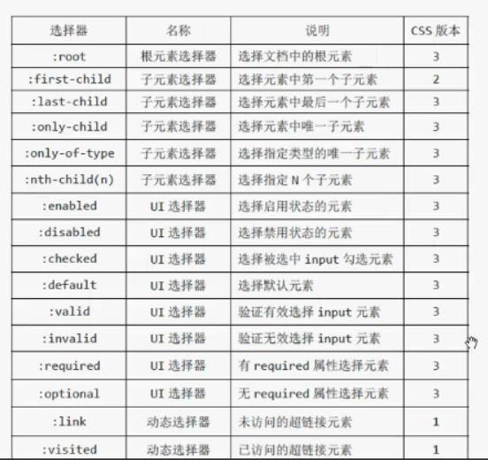
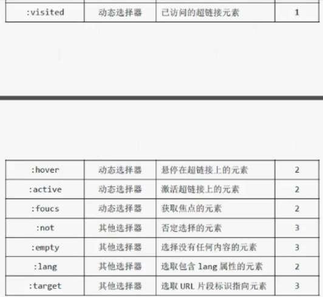
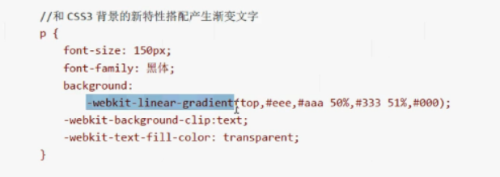
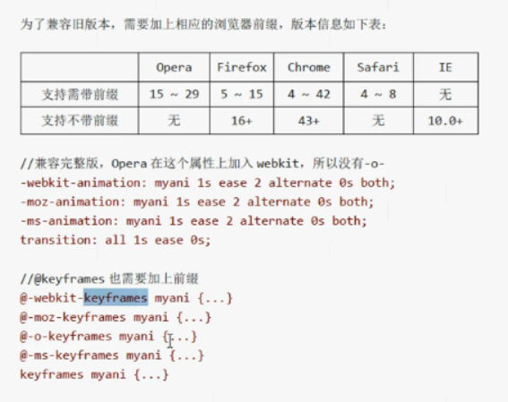

14.CSS入门
CSS选择器
17.CSS颜色与度量单位
CSS文本样式
CSS盒模型
CSS边框与背景
24.CSS表格与列表
25.CSS其他样式
26.CSS3前缀和rem
27.CSS文本效果
28.CSS3渐变效果
29.CSS3边框图片效果
CSS3变形效果
32.CSS3透视效果
33.CSS3动画效果
CSS传统布局
36.CSS3多列布局
CSS3弹性伸缩布局
40.使用Emmet插件
14.CSS入门
1. 创建CSS样式表的方式
1.1 内联样式
< p style="color:red;font-size:50px">...
1.2 内部样式定义
< style type="test/css">
p{
color:red;
}
< /style>
1.3 引入外部样式文件
< link type="test/css" rel="stylesheet" href="1.html">
1.4 导入外部样式文件
< style type="test/css">
@impoort url(1.css);
< /style>
2. 样式叠加效果,优先级
内联 > 内部 > import > link
但是可以用 !important 强制设置优先级
3.样式的继承
只继承文字的外观（文字，颜色，字体等），但不继承布局样式
但可用 inherit 强制继承
CSS选择器
1. CSS选择器总汇

2.1 全局选择器
*{}
2.2 元素选择器
p{}
2.3 id选择器 html页不要用同id名
#abc{}
2.4 类选择器 批量设置
.abc{}
p.abc{}
类选择器调用多个样式
< span class="abc def">...< /span>
2.5 属性选择器
[属性值],[href],[type="password"]
2.6 属性值开头匹配属性值
2.6.1 [href^="http"]{
color:red;
} ----- 开头为http的字体变红
2.6.2 [href$=".com"]{
color:orange;
} ----- 结尾为com的字体为橘黄
2.6.3 [href*="baidu"]
包含指定字符的匹配
}
2.6.4 [class~="abc"]{
属性值具有多个值时，匹配其中一个属性选择器
}
2.6.6 [lang|="en"]{
属性值具有多个值且使用“-”号连接符分割的其中一个值得属性选择器
}
2.7 复合选择器
2.7.1 分组选择器
p,b,span{id,类,属性选择器可混合}
2.7.2 后代选择器
p b{
b在P后n代都可以
}
2.7.3 子选择器
p>b{
b必须为p的子一代
}
2.7.4 相邻兄弟选择器
p+b{
匹配和第一个元素后面第一个元素
b的样式改变
}
2.7.5 普通兄弟选择器
p~b{
匹配和第一个元素后面的所有元素
}
2.8 伪元素选择器
2.8.1 ::first-line块级首行
::first-line{
color:red;
}
2.8.2 p::first-letter块级首字母(限制p标签)
p::first-letter{}
2.8.3 ::before文本前插入
::before{
content:'点击'；
}
2.8.4 ::after文本后插入
::after{
content:''；
}
2.8.5 ::selection
::selection{
当选择文字时触发选择
}
3. 伪类选择器汇总


3.1 结构性伪类选择器 ---- 根据元素在文档中的位置选择元素
3.1.1 根元素选择器 ----- 少用
:root{}
3.1.2 子元素选择器
ul > li:first-child{
选择第一个元素
}
ul > li:last-child{
选择最后一个元素
}
ul > li:only-child{
选择只有一个元素的子元素
}
ul > li:only-of-type{
选择只有一种指定类型的子元素的那个子元素
}
ul > li:nth-child{
选择第二个元素
}
ul > li:nth-last-child{
选择倒数第二个元素
}
ul > li:nth-of-type{
选择特定子元素的第二个元素
}
ul > li:nth-last-of-type{
选择特定子元素的倒数第二个元素
}
p:nth-child(2){ 属于父元素的第二个子元素的p元素的选择器 } 3.2 UI伪类选择器 ---- 根据元素的状态匹配元素
3.2.1 :enabled 启用或禁用状态元素
input:enabled{}
input:disabled{}
3.2.2 :checked 选择勾选的input元素
input:checked{}
3.2.3 :default
:default{
display:none;
}
3.2.4 :valid和:invalid
input:valid{
匹配验证有效
}
input:invalid{
匹配验证无效
}
3.2.5 :required
:required{
匹配必填项
}
3.2.6 :optional
:optional{
匹配非必填
}
3.3 动态伪类选择器 ---- 根据条件的改变匹配元素
3.3.1 :link和:visited
a:link{
未访问时状态
}
a:visited{
访问后状态
}
3.3.2 :hover
a:hover{
鼠标悬浮时，未点
}
3.3.3 :active
a:active{
鼠标点下不松时
}
3.3.4 :focus
a:focus{
对于文本框，获取到光标时的状态
}
3.4 其他伪类选择器
3.4.1 :not
a:not([href*="baidu"]){
否定选择器，反选
}
3.4.2 :empty
:empty{
匹配没有任何内容的元素
}
3.4.3 :lang
:lang(en){
匹配语言
}
3.4.4 :target
:target{
定位到锚点(id)时使用
}
17.CSS颜色与度量单位
1. 颜色表示
名称，二进制
color:rgb(r,g,b);
color:rgba(r,g,b,a);
color:hsl(色相,饱和度,透明度（%）);
color:hsla(色相,饱和度,透明度,透明度（0-1）)；
2. 度量表示
2.1 绝对长度单位
in 英尺
cm 厘米
mm 毫米
pt 磅
pc pica
2.2相对长度单位
em 与元素字号挂钩
ex 与元素字体的“x高度”挂钩
rem 与根元素的字号挂钩
px 像素，与分辨率挂钩
% 相对另一值的百分率
CSS文本样式
1. 关于文字
1.1 字体大小
font-size:px
xx-small 设置字体大小，每个值从小到大的固定值
x-small
small
medium
large
x-large
xx-large
smaller 设置字体相对父元素字体的大小
larger
数字+px
数字+% 相对父元素的字体的百分比大小
1.2 大小写
font-variant: normal 以小型大写状态，则恢复小写
small-caps 让小写以大写字母显示
1.3 倾斜
font-style: normal 正常
italic 斜体
oblique 让文字倾斜，在没有倾斜时
1.4 加粗
font-weight: normal
bold
bolder
lighter
100-900 600及之后为加,无单位
1.5 字体
font-family: 楷体，微软雅黑，宋体;
1.6 font 总写，简写
font: 50px bold red;
2. web字体 ---- 服务器端字体
@font-face{
font-family:'abc';
src: url('字体');
}
3. 文本样式
3.1 装饰线条
text-decoration: none
underline 底部加线条
overline 头部加线条
line-through 中部加线条，删除线
blink 文本进行闪烁，不支持
3.2 大小写转换
text-transform: uppercase 将英文转换为大写字母
lowercase 转换为小写字母
none
capitalize 将英文单词首字母大写,(我是 html)
3.3 给文本添加阴影
text-shadow： 5px 5px 3px black;
第一个值为水平偏移，二为垂直偏移，三为模糊度（可选），四为阴影颜色（可选）
4. 文本控制
4.1 对齐方式
text-align: left,right,center,
justify 内容两端对齐
start 让文本处于开始边界
end 处于结束边界
4.2 处理空白排版方式
white-space: normal 空白被压缩，文本自动换行
nowrap 空白被压缩，文本不换行
pre 保留空白格式
pre-line 空白被压缩，文本会在排满或换行符时换行
pre-wrap 空白被保留，文本会在排满或换行符时换行
4.3 文本间距
letter-spacing: normal 默认
长度值 如：数字+px
4.4 英文单词间距
word-spacing: normal 默认
长度值 如：数字+px
4.5 行高
line-height: normal 默认
长度值 如：数字+px
数值 1，2，3
%
4.6 过长的英文单词断开
word-wrap: normal 默认
break-word 断开
4.7 设置文本首行缩进
text-indent: normal 默认
长度值 如：数字+px
CSS盒模型
1. 元素尺寸
width: auto,50px,20%;
height
min-width
min-height
max-width
max-height
2. 元素内边距
padding-top,right,bottom,left;
padding:10px; 上下左右
padding:10px20px; 上下空10，左右20
padding：10px 20px 30px 上10，左右20，下30
padding：1px 2px 3px 4px; 上右下左
3. 外边距
margin 偏移量不在元素内
4. 处理溢出
overflow-x 水平溢出
overflow-y 垂直溢出
overflow 值： auto 有溢出则显示滚动条
hidden 溢出不显示
scroll 无论是否溢出，都有滚动条
visible 溢出显示
5. 元素可见性
visibility: visible 默认值，元素在页面上可见
hidden 不可见，但占据空间
collapse 不可见，隐藏表格的行与列,且不占位，非表格同hidden
6. 元素盒模型 ---- display
6.1 块级元素 ---- block
6.2 行内元素（内联） ---- inline
6.3 行内-块元素（内联块） ---- inline-block
效果同图片，两个并排的内联块可拼接成一个
6.4 隐藏元素，不占据空间 ---- none
7. 元素的浮动 ---- float
7.1 float： left
right
none
7.2 清除浮动
clean： left
float
both
CSS边框与背景
1. 声明边框
border-width 长度
长度值
百分数
thin 细
medium 中
thick 粗
border-style 样式名称
solid 实线
none 无
dashed 破折线
dotted 圆点线
double 双线
groove 槽线边框
inset 使元素内容具有内嵌效果
outset 使元素内容具有外凸效果
ridge 脊线
border-color 颜色值
border
border-top
border-left-width
2. 圆角边框
border-radius: 10px; 四条边角长度值或百分数
border-top-left-radius 左上边角
border-radius:10px 20px 30px 40px; 上右下左
3. 背景
3.1 background-color: 颜色
background-transparent; 设置透明色
3.2 background-image: url(); 平铺图片
background-image: none;
线性，放射性，，，，
background-repeat: repeat-x; 水平平铺
repeat-y; 竖直平铺
no-repeat; 一张图片
3.3 background-position: left; 图片定位
right
bottom;
center;
right top;
left botttom;
3.4 background-size: auto 默认值，图像以本尺寸显示
cover 等比例缩放，全覆盖后超出部分隐藏
contain 等比例缩放，较长边与容器重合
百分数
长度值
3.5 background-attachment: fixed 背景不随滚动条滚动
scroll 同滚
3.6 background-origin: border-box 在盒子外边距绘制背景
padding-box 在盒子内边距绘制背景
content-box 在内容部分绘制
3.7 background-clip: border-box; 盒子内部裁剪
padding-box; 内边距盒子部分裁剪
contant-box; 内容部分裁剪
3.8 background 简写
background: red url() no-repeat center,,,;
24.CSS表格与列表
1. 表格样式
1.1 border-collapse: separate 单元格边框独立
collapse 合并
1.2 border-spacing：10px； 单元格间距，前提为单元格独立
1.3 caption-side: top/bottom; 表格标题位置，上或下
1.4 empty-cells: show 空单元格 显示边框
hide 空单元格 不显示
1.5 table-layout: auto 表格排版，内容过长时，拉伸
fixed 不拉伸
1.6 border 外边框设置
1.7 内边框设置
table tr th,table tr td {}
2. 列表样式
2.1 list-style-type： none 无
disc 实心圆
circle 空心圆
square 实心方块
decimal 阿拉伯数字
lower-roman 小写罗马数字
upper-roman 大写罗马数字
lower-alpha 小写英文字母
upper-alpha 大写英文字母
等
2.2 list-style-image: none
url(); 以图片为标记
2.3 list-style-position: outside 标记位于内容框外部
inside 标记位于内容框内部
2.4 list-style： disc outside url();
3. 其他功能
垂直对齐（针对表格）
vertical-align: baseline 内容对象与基线对齐
top 内容对象与顶端对齐
middle
bottom
sub 垂直对齐文本的下标
super 上标
普通元素可用：
数值
百分比
25.CSS其他样式
1. 颜色和透明度
1.1 color
1.2 opacity ---- 透明度
2. 盒子阴影和轮廓
2.1 box-shadow: hoffset 阴影水平偏移量，长度值（必填）
同text-shadow voffset 阴影垂直偏移量（必填）
blur 模糊值
spread 阴影延伸半径
color 阴影颜色
inset 将外部阴影设为内部阴影
box-shadow :10px 20px 30px 40px 按上述顺序
2.2 outline: 轮廓样式
outline-color: 颜色
outline-offset: 长度
outline-style: 样式
outline-width: 长度
outline: 按上述顺序简写
2.3 光标样式
cursor:auto,default,none,context-menu,help,pointer,
progress,wait,cell,crosshair,text,vertical-text,
alias,copy,move,no-drop,not-allowed,e-resize,
n-resize,ne-resize,nw-resize,s-resize,se-resize,
sw-resize,w-resize,ew-resize,ns-resize,nesw-resize,
nwse-resize,col-resize,row-resize,all-resize
26.CSS3前缀和rem
1. CSS3前缀
Chrome,Safari -webkit-
Opera -o-
Firefox -moz-
Internet,Explorer -ms-
例：border-radius
-webkit-border-radius:50px;
2. 单位 rem ---- 相对于根元素html，与html挂钩
以后最好用rem与百分比
html{
font-size:62.5%; => 10px;
}
p{
font-size:1.1rem;
}
27.CSS文本效果
1. text-shadow 文本阴影 1.1 box-shadow: hoffset 阴影水平偏移量，长度值（必填）
同text-shadow voffset 阴影垂直偏移量（必填）
blur 模糊值
spread 阴影延伸半径
color 阴影颜色
inset 将外部阴影设为内部阴影
box-shadow :10px 20px 30px 40px 按上述顺序
1.2叠加
text-shadow: 0px 0px 0 rgb();
1px 2px 0 rgb();
2px 4px 6 rgb();
...
2. 文本裁剪
text-overflow: clip 裁剪时不添加“...”
ellipsis 添加
配合属性：white-space: nowrap; 不换行
overflow: hidden; 溢出
3. 文本描边 ---- 实验阶段，只有-webkit-支持
-webkit-text-stroke 简写
-webkit-text-stroke-width
-webkit-text-stroke-color
4. 文本填充 ---- 实验阶段，只有-webkit-支持
-webkit-text-fill-color: 填充颜色
和CSS3背景新特性搭配可产生渐变文字

28.CSS3渐变效果
1. 线性渐变
linear-gradient: 方位: to top/to top right/to right/to bottom...
起始色: 必填，颜色值
末尾色: 必填，颜色值
可多色
角度: 数字+deg
background-image:linear-gradient(to top right,red,yellow);
background-image:linear-gradient(red,yellow);
background-image:linear-gradient(50deg,red,yellow);
background-image:linear-gradient(-45deg,red 0%,yellow,blue 50%,green 100%);
% 还可用像素 orange 10px...
结合背景，使用透明渐变实现强大层次感
background-color:red;
background-image:linear-gradient(rgba(0,0,0,0.6),rgba(0,0,0,0));
重复渐变属性
background-image: repeating-linear-gradient(red 10px,yellow 30px);
2. 径向渐变
radial-gradient: 方位: 中心点，用像素、百分比、固定值，或复合搭配使用
起始色: 必填，颜色值
末尾色: 必填，颜色值
可多色
background-image: radial-gradient(orange,green);
设置形状
background-image: radial-gradient(circle,orange,green); 正圆
background-image: radial-gradient(ellipse,orange,green); 椭圆
设置形状及发散方向
background-image: radial-gradient(circle at top , orange , green);
background-image: radial-gradient(circle at top right ,orange,green);
设置发散的距离
background-image: radial-gradient(circle closest-side, orange,green);
closest-side: 从圆心到离圆心最近的边
closest-corner: 从圆心到离圆心最近的角
farthest-side: 从圆心到离圆心最远的边
farthest-corner: 从圆心到离圆心最远的角
还可以用像素
background-image: radial-gradient(circle 50px, orange , green);
重复背景
background-image: repeating-radial-gradient(circle 50px, orange , green);
29.CSS3边框图片效果
1. 属性解释
border-image-source 背景图片地址
border-image-slice 切割背景图片，无单位
border-image-slice: 27 fill
也可用百分比，边长的比值
fill --- 显示完整图像
border-image-width 边框图片的宽度
border-image-repeat 边框背景图片的排列方式
stretch 通过上右下左设置四个边
repeat 平铺填充，超过则被截断
round 平铺填充，动态调整图片大小直至铺满
space 平铺填充，动态调整图片的间距直至铺满
border-image-outset 边框向外扩张
border-image
border-image:url() 27 30/27px round;
CSS3变形效果
1. transform 指定应用的变换
none 无变化
translate 在方向上平移元素（长度值或百分比）
translateX
translateY
scale 在方向上缩放元素（数值）
scaleX
scaleY
rotate 旋转元素（角度）默认基准点为中心点
skew 在方向上使元素倾斜一定的角度
skewX
skewY
matrix 指定自定义变换，通过计算公式得数据
transform: translate(200px,200px);
transform: scale(1.5);
transform: rotate(-45deg);
transform: skew(45deg, 20deg);
transform: marix(1,0,0,1,30,30);
transform: rotate(45deg) scale(1.5) ...;
2. transform-origin 指定变换的起点（基准点）
百分数值
left,center,right 指定X轴的位置
top,center,bottom 指定Y轴的位置
3. 3D变形 ---- 要加透视
translate3d(x,y,z) 3D方式平移元素
translateZ(z)
scale3d(x,y,z) 3D方式缩放一个元素 --单独设置无效，配合角度一起rotate
scaleZ(z)
rotate3d(x,y,z,a) 3D方式旋转元素(xyz取值0或1，表示是否启用xyz,旋转角度)
rotateX(a)
rotateY(a)
rotateZ(a)
perspective(长度值) 设置一个透视投影矩阵
matrix3d(多个值) 定义一个矩阵
transform: translate3d(200px,200px,100px);
transform: scale3d(1.5,1.5,2.5) rotateX(45deg);
4. perspective-origin: 指定变换的起点（基准点）
百分数值
left,center,right 指定X轴的位置
top,center,bottom 指定Y轴的位置
5. transform-style 指定嵌套元素如何在3D空间呈现
flat: 表示所有子元素在2D平面呈现
preserve-3d: 表示子元素在2D空间中呈现
6. perspective 透视值，设置查看者的位置，并将可视内容映射到一个视锥上，继而投放到一个2D平面上
none
长度值:500px
32.CSS3透视效果
1. 过渡效果 --- 借由事件触发
transition-property: 指定过度或动态模拟的CSS属性
none
all 默认值，指定元素所支持transition-property属性的样式
指定样式 指定支持transition-property的样式
transition-property:background-color, color, , ;
transition-duration: 指定完成过渡的时间
transition-duration:1s;
transition-timing-function: 缓动效果指定过渡的函数
ease: 默认值，元素样式从初始状态过渡到终止状态时速度由快到慢，逐渐变慢。
linear: 恒速
ease-in: 元素样式从初始状态过渡到终止状态时，速度越来越快
ease-out: 元素样式从初始状态过渡到终止状态时，速度越来越慢
ease-in-out: 元素样式从初始状态过渡到终止状态时，先加速，再减速
跳跃式过渡
step(5,end); / strp(5,strat);
两类过渡函数还可以自定义
transition-timing-function: ease；
transition-delay: 指定过渡开始出现的延迟时间
transition-delay:1s; 全部样式
transition-delay:0s, 1s, 0s; 单个设置
transition: 简写
1. transition: backgroung-color 1s ease 0s,color 1s ease 1s; 按样式设置
2. transition: all 1s ease 0s; 整体设置
33.CSS3动画效果
1. 动画属性animation（复合属性）
animation-name 指定一个关键帧动画的名称
animation-duration 用来设置动画播放所需的时间
animation-timing-function 用来设置动画的播放方式
animation-delay 指定动画的延迟时间
animation-iteration-count 指定动画播放的循环次数
animation-direction 指定动画播放方向
animation-play-state 控制动画的播放状态
animation-fill-mode 设置动画的时间外属性
animation 简写
@keyframes 声明一个动画
@keyframes name{
/*....*/
}
例
2. @keyframes 百分比或 from to
@keyframes myani{
0%{
background-color: white;
margin-left: 0px;
}
100%{
background-color: black;
margin-left: 100px;
}
}
3. animation-name
none: 默认值，没有指定任何动画
INDEX: 是由@keyframes指定创建的动画名称
4. animation-duration 播放时间
animation-duration: 1s;
5. animation-timing-function 动画的播放方式
ease: 过渡速度由快到慢
ease-in: 由快到慢并加速
ease-out: 速度越来越慢
ease-in-out: 先加速，再减速
linear: 恒速
cubic-bezier: 自定义
6. animation-delay 延迟时间
animation-delay: 1s;
7. animation-iteration-count 循环次数
animation-iteration-count: 次数/infinite(无限次);
8. animation-direction 设置播放方向交替
normal: 默认值，每次播放向前
alternate: 一次向前，一次向后，交替进行
9. animation-play-state
animation-play-state: paused; 停止播放动画
10. animation-fill-mode 播放后不再返回
none 按预期进行和结束
forwards 动画结束后继续应用最后关键帧位置，即不返回
backforwards 动画结束后继续应用最后关键帧位置，即返回
both 根据情况产生forwards或backforwards的效果
11. animation: 简写
animation: myani(name) 1s ease 2 alternate 2s(延迟) both;

CSS传统布局
1. 1024-28/1280-28
996 1252
2. 表格布局
固定布局：给定px；
流体布局：用百分比；
3. 浮动布局
采用float和clear两个属性
3.1 固定布局：给定px；
body { width: 960px; }
aside { width: 200px;
float: left;
}
section { width: 80%;
float:fight;
}
footer { clear:both; }
3.2 流体布局：用百分比；
body { width: auto; }
aside { width: 20%; }
section { width: 80%; }
4. 定位布局
4.1 static: 默认值，无定位
4.2 absolute: 绝对定位，脱离文档流，以窗口文档左上角(0,0)为起点，不占位，使用top,right,bottom,left
position: absolute;
top: 20px;
left 20px;
4.3 relative: 相对定位，以自己为基准点(0,0)，不脱离文档流，但是占用未偏移时的位置，占位偏移，使用top,right,bottom,left
4.4 fixed: 以窗口参考定位，脱离文档流，不占位，以窗口左上角(0,0)为起点，而不是文档，使用top,right,bottom,left
4.5 z-index: 设置层次; auto/数字--数字大的层次高
/** 若想即脱离文档流，又以父元素（body为例）为参考点，还要绝对定位 **/
第一步：将需要设置参考点的父元素设置为相对，且不设置坐标
body{
position: relative;
}
第二步：如果父元素设置了参考点，子元素的绝对定位将以它为基准
header{
position: absolute;
top: 0px;
left: 0px;
}
/** ******************************************************* **/
5. box-sizing
content-box: 默认值，border和padding设置后用于元素的总长度，不含于
border-box： border和padding设置后不用于元素的总长度，含于
完整版：
-webkit-box-sizing: border-box;
-moz-box-sizing: border-box;
-ms-box-sizing: border-box;
box-sizing: border-box;
6. resize 更改元素尺寸大小
none 默认值，不允许用户调整元素大小
both 用户可以调节元素的宽度和高度
horizontal 用户可以调节元素的宽度
vertical 用户可以调节元素的高度
一般普通元素，默认值是不允许的。但如果是表单类的textarea元素，默认是允许的。而普通元素需要设置overflow: auto,
配合resize才会出现可拖拽的图形。即overflow: auto; resize: both;
36.CSS3多列布局
1. columns多列布局属性
columns 集成column-width和column-count两个属性
column-width 列宽
column-count 定义分列列数
column-gap 列间距
column-rule 列边框
column-span 多列布局中子元素跨列效果，firefox不支持
column-fill 控制每列的列高，主流浏览器不支持
完整形式：
-webkit-columns: 150px 4;
-moz-columns: 150px 4;
columns: 150px 4;
其中 150 是能显示的最小大小
1.1 column-width: 数字px/auto;
column-count: 列数/auto;
如果没有设置列数，只有宽度，则自动计算列数；
如果设置了宽度和列数，则在实际宽度大于设置宽度的前提下，以列数为主；
1.2 column-gap 列间距
1.3 column-rule 分割线，自适应，浮于上一层，宽度不影响布局
column-rule：宽度，类型，颜色；
1.4 column-span:none/all;
none: 不跨列
all: 跨列
CSS3弹性伸缩布局
1. 旧版本 display: box 将容器盒模型作为块级弹性伸缩盒显示 inline-box 将容器盒模型作为内联级弹性伸缩盒显示 -webkit-box; -moz-box; 1.1 box-orient 主要实现盒子内部元素的流动方向 horizontal 伸缩项目从左到右水平排列 vertical 伸缩项目从上到下垂直排列 inline-axis 伸缩项目沿着内联轴排列 block-axis 伸缩项目沿着块轴排列显示 -moz-box-orient:horizontal; 1.2 box-direction 设置伸缩容器中的流动顺序 normal: 默认值，正常顺序 reverse: 逆序 -moz-box-direction:reverse; 1.3 box-pack 用于伸缩项目的分布方式 start 伸缩项目以起始点靠齐 end 伸缩项目以结束点靠齐 center 伸缩项目以中心点靠齐 justify 伸缩项目平局分布，两边排列，-webkit-支持，-moz-不支持 -moz-box-pack: start; 1.4 box-align 用于处理伸缩容器的额外空间 start 伸缩项目以顶部为基准，清理下部额外空间 end 伸缩项目以底部为基准，清理上部额外空间 center 伸缩项目以中部为基准，平均清理上下部额外空间 baseline 伸缩项目以基线为基准，清理额外的空间 stretch 伸缩项目填充整个容器，默认 -moz-box-align: start; 1.5 box-flex 使用浮点数分配伸缩项目的比例 数值 -moz-box-flex: 2; 1.6 box-ordinal-group 设置伸缩项目的显示位置 p:nth-child(1){ -moz-box-ordinal-group: 3; } 2. 混合过度版 主要针对IE10 display: flexbox; 将容器盒模型作为块级弹性伸缩盒显示（混合版本） inline-flexbox; 将容器盒模型作为内联级弹性伸缩盒显示（混合版本） display: -ms-flexbox; 2.1 flex-direction 设置伸缩项目的排列方式 row 设置从左到右排列 row-reverse 设置从右到左排列 column 设置从上到下排列 column-reverse 设置从下到上排列 2.2 flex-wrap 设置无法容纳时，自动换行 nowrap 默认值，都在一行或一列显示 wrap 伸缩项目无法容纳时，自动换行 wrap-reverse 伸缩项目无法容纳时，自动换行，方向和wrap相反 2.3 flex-flow 排列方向和控制换行的简写形式 -ms-flex-flow: row wrap; 2.4 flex-pack 设置伸缩项目的对齐方式 start 伸缩项目以起始点靠齐 end 伸缩项目以结束点靠齐 center 伸缩项目以中心点靠齐 justify 伸缩项目平局分布 -ms-flex-pack: start; 2.5 flex-align 用于处理伸缩容器的额外空间 start 伸缩项目以顶部为基准，清理下部额外空间 end 伸缩项目以底部为基准，清理上部额外空间 center 伸缩项目以中部为基准，平均清理上下部额外空间 baseline 伸缩项目以基线为基准，清理额外的空间 stretch 伸缩项目填充整个容器，默认 -ms-flwx-align: start; 2.6 flex 用于控制伸缩容器的比例分配 设置比例分配： p:nth-child(1){ -ms-flex: 1; } p:nth-child(2){ -ms-flex: 3; } p:nth-child(3){ -ms-flex: 1; } 2.7 flex-order 控制伸缩项目出现的顺序 p:nth-child(1){ -ms-flex-order: 2; } p:nth-child(2){ -ms-flex-order: 3; } p:nth-child(3){ -ms-flex-order: 1; } 3. 新版本 无需前缀 display: flex; 将容器盒模型作为块级弹性伸缩盒显示（混合版本） inline-flex; 将容器盒模型作为内联级弹性伸缩盒显示（混合版本） display: flex; 3.1 flex-direction 设置伸缩项目的排列方式 row 设置从左到右排列 row-reverse 设置从右到左排列 column 设置从上到下排列 column-reverse 设置从下到上排列 3.2 flex-wrap 设置无法容纳时，自动换行 nowrap 默认值，都在一行或一列显示 wrap 伸缩项目无法容纳时，自动换行 wrap-reverse 伸缩项目无法容纳时，自动换行，方向和wrap相反 3.3 flex-flow 排列方向和控制换行的简写形式 flex-flow: row wrap; 3.4 justify-content 设置伸缩项目的对齐方式 flex-start 伸缩项目以起始点靠齐 flex-end 伸缩项目以结束点靠齐 center 伸缩项目以中心点靠齐 space-between 伸缩项目平局分布 space-around 同上，但两端保留一半的空间 justify-content: flex-end; 3.5 align-items 用于处理伸缩容器的额外空间 flex-start 伸缩项目以顶部为基准，清理下部额外空间 flex-end 伸缩项目以底部为基准，清理上部额外空间 center 伸缩项目以中部为基准，平均清理上下部额外空间 baseline 伸缩项目以基线为基准，清理额外的空间 stretch 伸缩项目填充整个容器，默认 align-itmes: flex-start; 3.6 align-self 用于清理额外空间，但它是单独设置某一个伸缩项目的。其属性与和align-items一致 p:nth-child(2){ align-self: center; } 3.7 flex 用于控制伸缩容器的比例分配 设置比例分配： p:nth-child(1){ flex: 1; } p:nth-child(2){ flex: 3; } p:nth-child(3){ flex: 1; } 3.8 order 控制伸缩项目出现的顺序 p:nth-child(1){ order: 2; } p:nth-child(2){ order: 3; } p:nth-child(3){ order: 1; }
40.使用Emmet插件